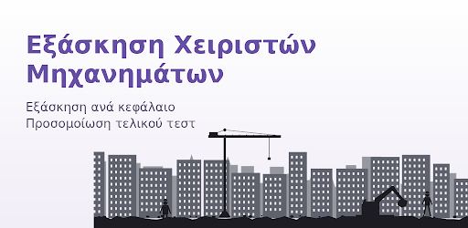
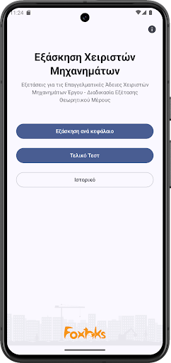
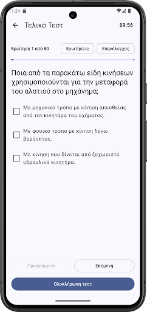
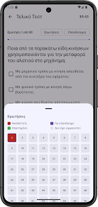

448 ερωτήσεις
Μεγάλη βάση ερωτήσεων για συστηματική εξάσκηση στη θεωρία.
OPERATOR EXAM QUIZ
Μια εφαρμογή Android για εξάσκηση στη θεωρία και προετοιμασία για τις εξετάσεις χειριστών μηχανημάτων έργου.
Λήψη από Google Play
ΤΙ ΠΕΡΙΛΑΜΒΑΝΕΙ
Η εφαρμογή συγκεντρώνει την ύλη σε οργανωμένα κεφάλαια και σου επιτρέπει να εξασκηθείς τόσο σε μεμονωμένες ερωτήσεις όσο και σε ολοκληρωμένη προσομοίωση εξέτασης.
Μεγάλη βάση ερωτήσεων για συστηματική εξάσκηση στη θεωρία.
Η ύλη είναι οργανωμένη σε 15 θεματικά κεφάλαια για πιο εύκολη μελέτη.
Η εφαρμογή λειτουργεί χωρίς σύνδεση στο Internet. Δεν απαιτείται API ή λογαριασμός για τη χρήση της.
Η εφαρμογή διατίθεται δωρεάν και δεν περιλαμβάνει διαφημίσεις.
FINAL EXAM
Δοκίμασε τις γνώσεις σου σε μια ολοκληρωμένη προσομοίωση εξέτασης με χρονικό περιορισμό.
Οι ερωτήσεις μπορούν να έχουν μία ή περισσότερες σωστές απαντήσεις. Κατά τη διάρκεια της εξέτασης μπορείς να περιηγείσαι στις ερωτήσεις και να επανεξετάζεις τις απαντήσεις σου.
Η κατάσταση της εξέτασης διατηρείται ακόμη και αν η εφαρμογή μεταφερθεί στο παρασκήνιο ή κλειδώσει η οθόνη.
ΜΕΣΑ ΑΠΟ ΤΗΝ ΕΦΑΡΜΟΓΗ
Περιηγήσου στο περιβάλλον της εφαρμογής και δες πώς οργανώνεται η εξάσκηση και η εξέταση.



ΓΙΑ ΠΟΙΟΝ ΕΙΝΑΙ
Το Operator Exam Quiz δημιουργήθηκε για όσους θέλουν να εξασκηθούν στη θεωρητική ύλη και να ελέγξουν την ετοιμότητά τους πριν από τις εξετάσεις.
Μπορείς να μελετήσεις ανά κεφάλαιο, να απαντήσεις ερωτήσεις και να χρησιμοποιήσεις το Final Exam για να προσομοιώσεις μια ολοκληρωμένη εξέταση.
ΣΧΕΤΙΚΑ ΜΕ ΤΟΝ ΔΗΜΙΟΥΡΓΟ
Το Operator Exam Quiz δημιουργήθηκε από τον Νίκο Ξαπλαντέρη, software developer με προηγούμενη επαγγελματική εμπειρία ως χειριστής μηχανημάτων έργου.
Η εφαρμογή δημιουργήθηκε με στόχο να προσφέρει ένα πρακτικό και εύχρηστο εργαλείο εξάσκησης για όσους προετοιμάζονται για τις θεωρητικές εξετάσεις χειριστών μηχανημάτων έργου.
ΣΥΧΝΕΣ ΕΡΩΤΗΣΕΙΣ
Ναι. Το Operator Exam Quiz διατίθεται δωρεάν και δεν περιλαμβάνει διαφημίσεις.
Όχι. Η εφαρμογή μπορεί να χρησιμοποιηθεί offline.
Η εφαρμογή περιλαμβάνει 448 ερωτήσεις οργανωμένες σε 15 κεφάλαια.
Το Final Exam περιλαμβάνει 80 ερωτήσεις και έχει χρονικό όριο 90 λεπτών.
Για την ολοκλήρωση του Final Exam απαιτούνται τουλάχιστον 60 σωστές απαντήσεις στις 80, δηλαδή 75%.
Κατέβασε δωρεάν το Operator Exam Quiz από το Google Play.
Λήψη από Google Play